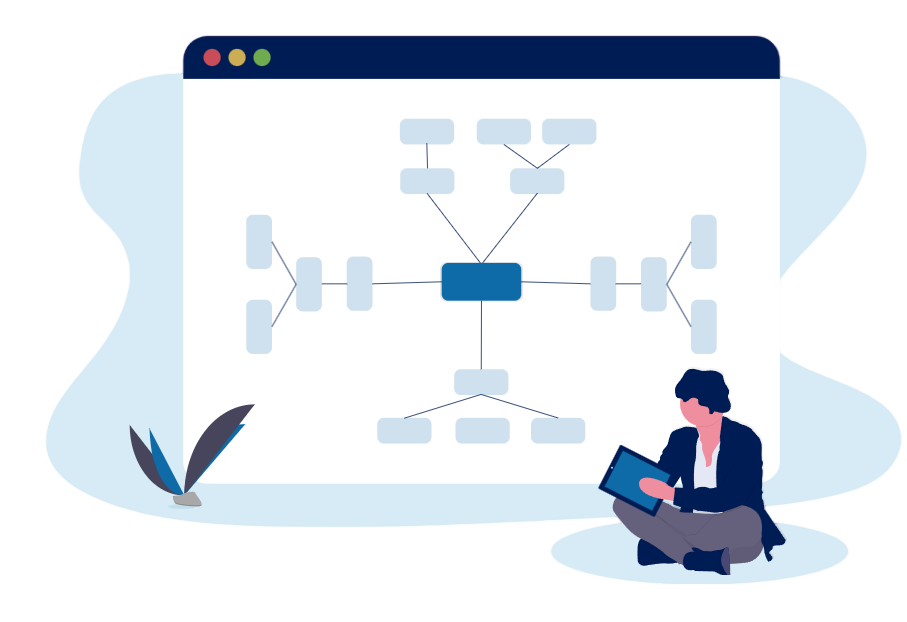

Projects
My projects leverage modern tools in Data Science, Machine Learning, and AI. I enjoy building intelligent solutions and deploying them as web applications using cloud technologies.
My projects leverage modern tools in Data Science, Machine Learning, and AI. I enjoy building intelligent solutions and deploying them as web applications using cloud technologies.
Developed an AI agent leveraging LLMs, LangChain, and LanGraph to automate order processing, account management, and inventory tracking, reducing manual workload by 60%.
Created a Retrieval-Augmented Generation (RAG) Chatbot using LLM and FAISS vector database, delivering 90% accurate, citation-backed responses sourced from domain-specific data.
Built an end-to-end ML pipeline using Python and SQL for financial fraud detection, applying supervised and unsupervised learning techniques to achieve 96% accuracy.
Executed migration of relational data from PostgreSQL to Neo4j graph database, optimizing query performance and enabling complex relationship analysis using the Chinook dataset.
Designed an NLP chatbot using Hugging Face models for predicting potential diseases from reported symptoms, deployed with Azure and Streamlit for easy access.
Developed a heart disease risk prediction model with 94% accuracy using Random Forest, featuring a web app and API using Streamlit for real-time assessment.
Built a model to predict customer churn using customer behavioral data, integrated with FlaskAPIs and Streamlit UI to help improve retention strategies.
Performed customer segmentation using clustering techniques to enable targeted marketing and personalized customer experiences.
Analyzed electric vehicle adoption trends and factors affecting growth for for 50 USA states using WebScraping, data science and visualization techniques.
Developed regression models using Scikit-learn to predict house prices from key features, achieving 92% accuracy after preprocessing and feature selection.
Built an ML model to detect microplastics in water sources, supporting environmental monitoring and research.
Conducted data analysis on the relationship between sleep patterns and mental health using the NHANES dataset. Identified correlations between sleep duration and lifestyle factors to uncover key behavioral insights.